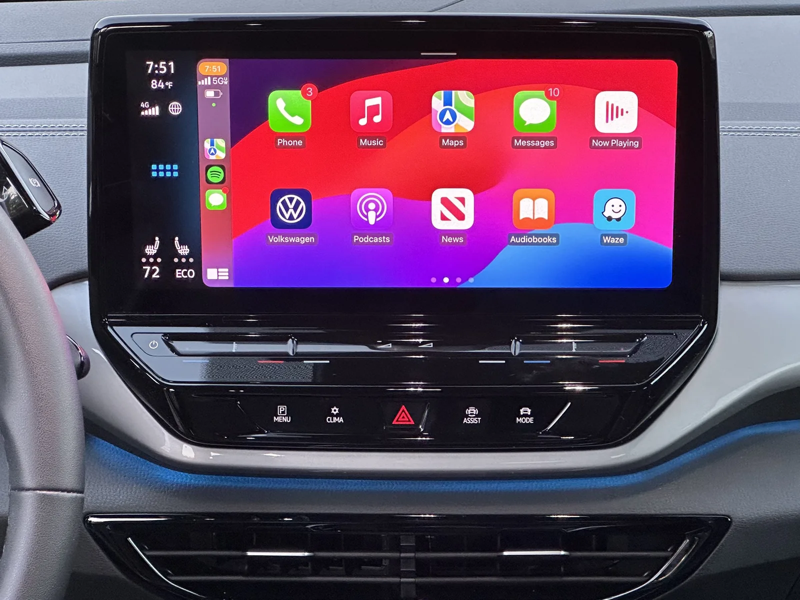
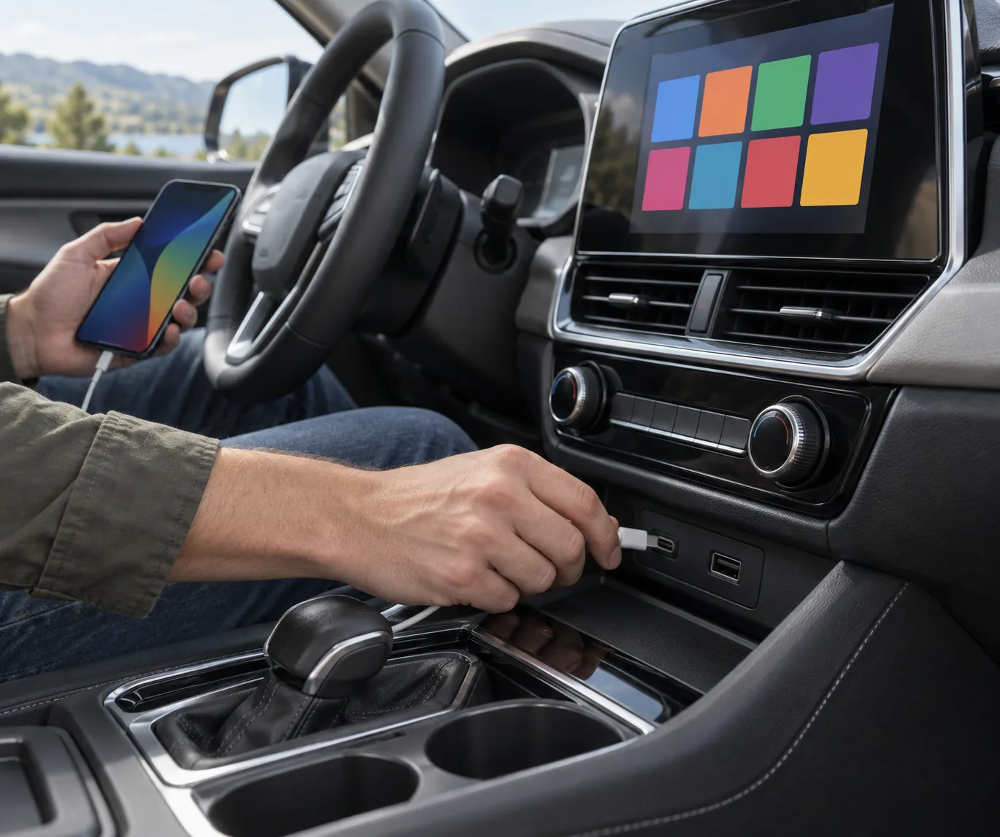
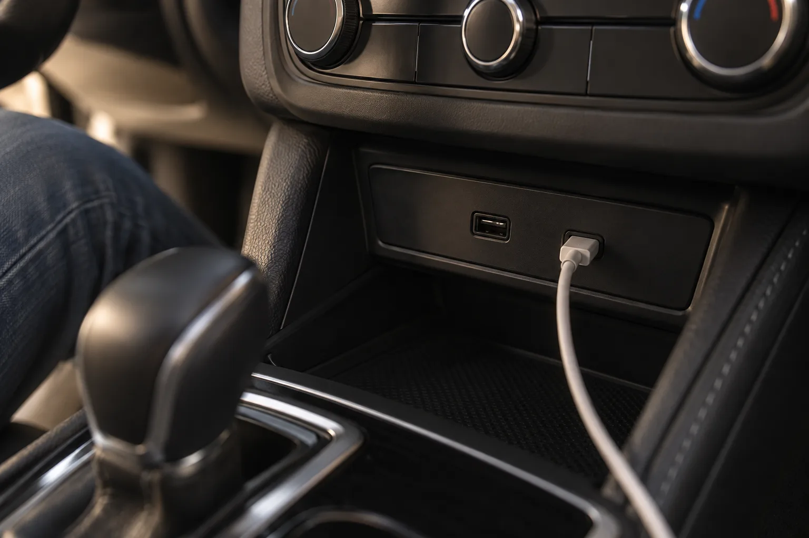
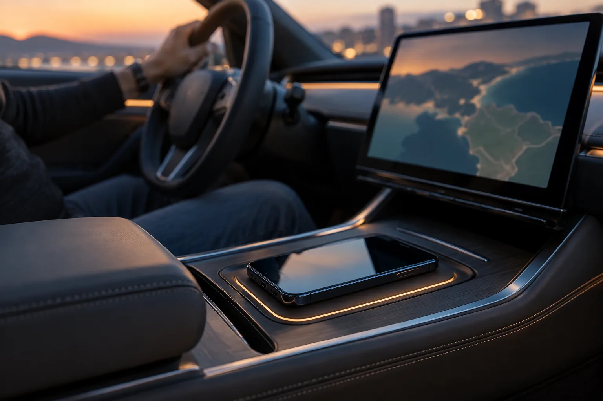
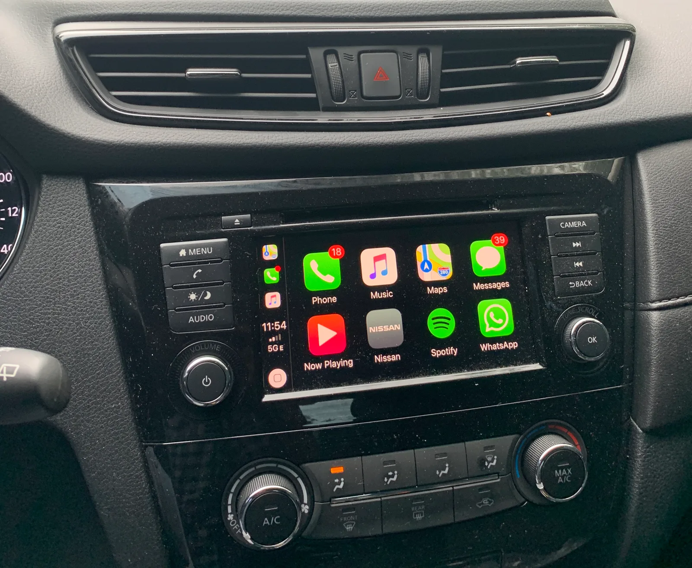
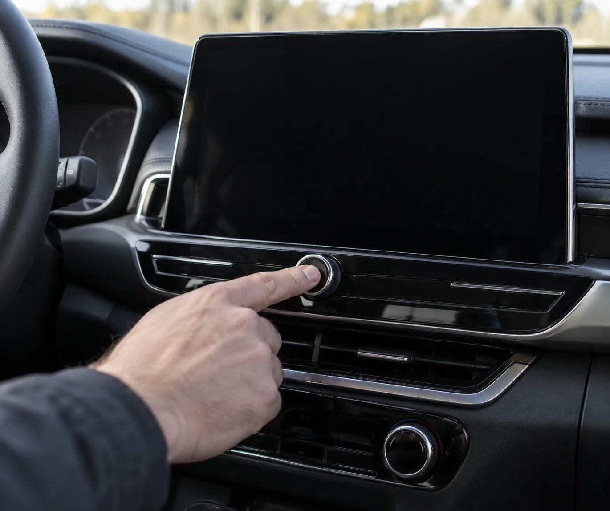
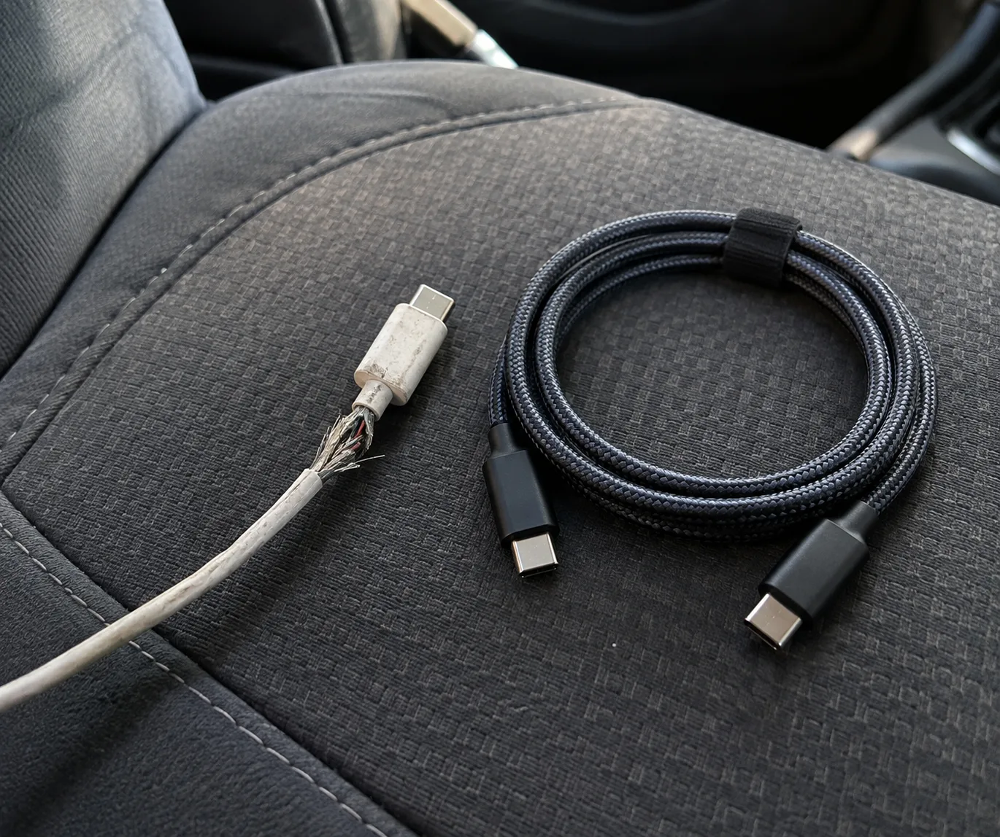
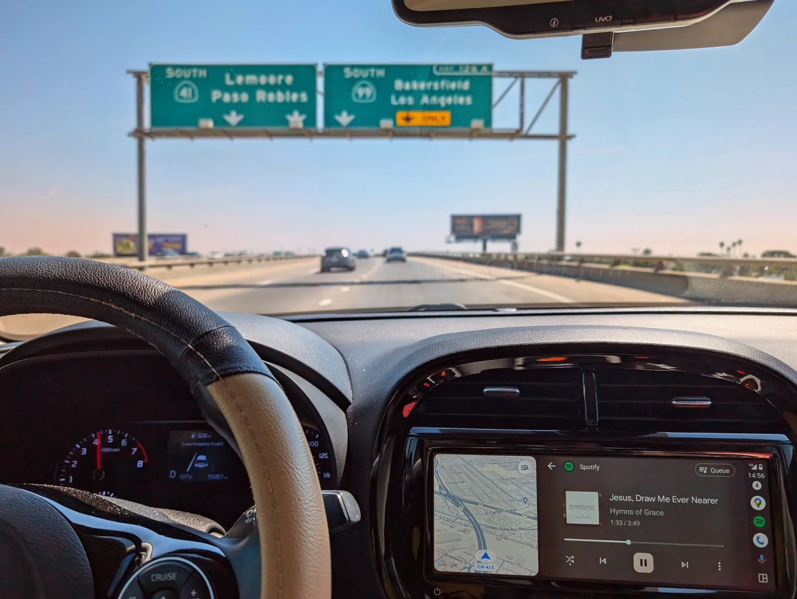

▲ 폭스바겐 ID.4 순정 화면에서 무선 카플레이가 실행된 모습. 차에 타서 이 화면이 안 뜬다면 케이블·폰 설정·차량 시스템 순서로 확인하면 된다 ⓒ Sunnyboy122 / Wikimedia Commons (CC0)
차에 타서 폰을 꽂았는데 카플레이·안드로이드 오토 화면이 안 뜨거나, 무선으로 잘 붙던 게 몇 분마다 끊긴다면 대부분은 세 군데 중 하나다. 케이블(과 USB 포트), 폰 설정, 그리고 차의 인포테인먼트 시스템이다. 애플과 구글의 공식 지원 문서, 제조사 매뉴얼에 나온 순서를 바탕으로 지금 바로 해볼 것부터 정리했다.
1. 지금 바로 해볼 것 — 순서대로 따라 하기
먼저 차를 안전한 곳에 세우고 P(주차)에 둔 상태에서 시작하자. 구글도 안드로이드 오토를 설정할 때는 차를 P에 두고 인포테인먼트 시스템을 켠 상태에서 하라고 안내한다. 순서는 돈 안 들고 빠른 것부터다.
① 유선: 케이블과 포트부터 의심하자
- 다른 케이블로 바꿔 꽂는다. 애플은 유선 연결이 안 되면 "다른 USB 케이블로, 가능하면 다른 USB 포트에" 다시 연결해 보라고 안내한다. 구글도 전에 잘 되다가 갑자기 안 된다면 케이블 교체로 해결될 가능성이 크다고 설명한다.
- 데이터 전송이 되는 케이블인지 확인한다. 충전만 되는 저가형 케이블로는 폰이 충전은 돼도 화면 연결은 안 될 수 있다. 가장 확실한 건 폰을 살 때 들어 있던 정품 케이블이다. 현대차 매뉴얼도 휴대폰 제조사가 제공한 정품 케이블을 쓰라고 하고, 비정품은 오작동이나 시스템 손상을 일으킬 수 있다고 경고한다.
- 길이와 중간 연결을 줄인다. 구글은 1m(3피트) 이하 케이블을 쓰고 USB 허브나 연장 케이블은 쓰지 말라고 권한다. 서드파티 케이블이라면 USB 표준 인증을 받은 제품이 낫다.
- 차의 '데이터용' USB 포트에 꽂는다. 차에 USB 구멍이 여러 개라도 전부 카플레이·안드로이드 오토를 지원하진 않는다. 뒷좌석이나 콘솔 안쪽 포트는 충전 전용인 경우가 많다. 애플은 카플레이용 포트에 카플레이 아이콘이나 스마트폰 아이콘이 표시돼 있을 수 있다고 안내한다. 확실하지 않으면 취급설명서의 'USB 단자' 항목을 확인하자.
- USB-C 아이폰에 라이트닝 어댑터를 끼웠다면 빼고 직접 연결해 본다. 애플은 일부 어댑터·케이블 조합에서 문제가 생길 수 있다고 적고 있다.

▲ 스마트폰 케이블을 센터페시아 아래 USB 포트에 꽂는 모습. 화면이 안 뜨면 케이블과 포트를 바꿔 보는 것이 첫 단계다 이미지=AI 생성

▲ 센터 콘솔의 USB 포트. 모양이 같아도 데이터 연결이 되는 포트와 충전만 되는 포트가 따로 있는 차가 많다 이미지=AI 생성
② 무선: 블루투스·와이파이, 그리고 '지우고 다시 등록'
- 폰의 블루투스와 와이파이를 둘 다 켠다. 무선 카플레이·안드로이드 오토는 블루투스로 처음 연결을 잡고 와이파이로 화면을 보낸다. 애플은 설정 > 블루투스, 설정 > Wi-Fi가 모두 켜져 있는지 확인하고, Wi-Fi 목록의 카플레이 네트워크를 눌러 '자동 연결'이 켜져 있는지 보라고 안내한다. 현대차 매뉴얼도 무선 연결 시 휴대폰의 Wi-Fi와 블루투스를 켜라고 적고 있다. 안드로이드는 구글이 무선 설정 중 블루투스·와이파이와 함께 위치 서비스도 켜 두라고 권한다.
- 안드로이드는 무선 조건부터 확인한다. 구글에 따르면 무선 안드로이드 오토는 5GHz 와이파이를 지원하는 폰과 데이터 요금제가 필요하고, 안드로이드 11 이상 폰에서 쓸 수 있다. 유선은 안드로이드 9 이상이다.
- 기존 등록을 지우고 처음부터 다시 등록한다. 아이폰은 설정 > 일반 > CarPlay > 내 차 선택 > '이 차량 지우기' 후 다시 설정한다. 안드로이드는 설정 > 연결된 기기 > 연결 환경설정 > Android Auto > 이전에 연결된 차량에서 '모든 차량 삭제' 후 다시 연결한다(메뉴 이름은 폰 제조사마다 조금 다를 수 있다). 차 쪽 기기 목록에서도 폰을 지우고 새로 추가하면 더 확실하다.
- 차의 등록 대수 한도도 본다. 현대차 인포테인먼트는 아이폰을 최대 6대까지 등록할 수 있다. 가족 폰이 여럿 등록돼 있다면 안 쓰는 기기를 지우자.

▲ 무선충전 패드에 폰을 올려두고 무선으로 화면을 연결한 모습. 무선 연결은 블루투스와 와이파이가 모두 켜져 있어야 한다 이미지=AI 생성
③ 폰 설정: 막아둔 기능이 없는지
- 아이폰 스크린 타임 제한을 확인한다. 폰이 아예 인식되지 않으면 설정 > 스크린 타임 > 콘텐츠 및 개인정보 보호 제한으로 들어가, 제한이 켜져 있다면 '허용된 앱'에서 CarPlay가 켜져 있는지 확인하자. 자녀 보호용으로 설정해 뒀다가 잊는 경우가 많다.
- 아이폰은 Siri가 켜져 있어야 한다. 애플은 문제 해결 순서에 Siri 활성화 확인을 넣고 있다.
- OS와 앱을 최신으로. 애플은 최신 iOS를 쓰라고 하고, 현대차 매뉴얼도 카플레이나 Siri 기능이 안 되면 iOS를 최신 버전으로 업데이트하라고 안내한다. 구글도 최신 안드로이드 버전을 권장한다. Android Auto는 폰에 기본 내장돼 있어 따로 내려받을 필요는 없지만, 연결 과정에서 업데이트 안내가 뜨면 진행하고 Play 스토어에서 Android Auto 앱이 최신인지도 확인하자.
- 처음 연결할 때 뜨는 허용 창을 모두 승인한다. 폰에 뜨는 카플레이·안드로이드 오토 사용 동의나 권한 요청을 무심코 거절하면 연결이 안 된다. 거절했다면 위의 '지우고 다시 등록'으로 처음부터 다시 하자. 안드로이드는 설정 > 애플리케이션(앱) > Android Auto > 권한에서 거절한 권한을 '허용'으로 바꿀 수도 있다(구글 Play 고객센터의 앱 권한 변경 경로 기준, 메뉴 이름은 폰마다 조금 다르다).

▲ 닛산 캐시카이 순정 화면에 카플레이 홈 화면이 뜬 모습. 폰이 연결됐는데 화면이 자동으로 바뀌지 않으면 차 화면의 카플레이 아이콘을 직접 눌러 보자 ⓒ Rberchie / Wikimedia Commons (CC BY-SA 4.0)
④ 차량 쪽: 재시작과 업데이트
- 폰과 차를 둘 다 재시작한다. 애플은 "아이폰과 차를 재시작하라"고 안내하고, 구글도 차의 인포테인먼트 시스템 재시작을 권한다. 가장 쉬운 방법은 시동을 끄고 문을 여닫은 뒤 잠시 기다렸다 다시 켜는 것이다. 시스템만 다시 시작하는 방법은 제조사·세대마다 다르다. 제조사 매뉴얼에 나온 예는 이렇다.
- 현대·기아 ccNC 인포테인먼트: 조작 패널의 시스템 리셋 버튼이 '시스템 다시 시작' 기능이다. 전원 버튼을 길게 누르는 건 화면과 소리를 끄는 기능이라 재시작이 아니다.
- 현대 Connect-S 인포테인먼트: 음량 노브를 왼쪽으로 3칸 이상, 오른쪽으로 3칸 이상 돌린 뒤 10초간 길게 누르면 시스템이 다시 시작된다.
- 제네시스 G80(RG3) 부분변경 모델 인포테인먼트(ccIC27): 헤드유닛의 MAP과 SETUP 버튼을 5초간 누르면 시스템이 리셋된다.
- 차 설정에서 기능이 켜져 있는지 본다. 구글은 인포테인먼트 설정에서 안드로이드 오토가 활성화돼 있는지 확인하라고 한다. 현대차는 설정 > 기기 연결 > 폰 프로젝션 메뉴에서 켜고 끈다. 화면이 자동으로 안 바뀌면 홈 화면의 카플레이·안드로이드 오토 아이콘을 직접 눌러 보자.
- 차량 소프트웨어를 업데이트한다. 애플은 카플레이 헤드유닛이 제조사의 최신 펌웨어를 쓰고 있는지 확인하라고 하고, 구글은 파이오니어·켄우드 같은 애프터마켓 헤드유닛이라면 제조사 홈페이지에서 펌웨어 업데이트를 찾아보라고 안내한다. 최근 차는 무선(OTA)으로, 그 이전 차는 서비스센터나 USB·SD 카드로 내비게이션 업데이트를 받는 방식이 많다.

▲ 인포테인먼트 화면 아래 다이얼을 눌러 시스템을 다시 켜는 모습. 재부팅 방법과 버튼 위치는 차종마다 다르다 이미지=AI 생성
2. 증상으로 원인 가르기
같은 '연결 안 됨'이라도 증상에 따라 먼저 볼 곳이 다르다. 아래 표에서 내 증상을 찾고 오른쪽 칸부터 해보자.
| 증상 | 의심 원인 | 먼저 해볼 것 |
|---|---|---|
| 꽂아도 아예 인식 안 됨 | 충전 전용·불량 케이블, 데이터 미지원 포트, 아이폰 스크린 타임 제한, 차 설정에서 기능 꺼짐 | 정품 케이블로 교체 → 표시가 있는 포트로 → 스크린 타임 '허용된 앱' 확인 → 차 설정에서 기능 켜기 |
| 연결되자마자, 또는 주행 중 툭툭 끊김 | 케이블 단선·접촉 불량(특히 커넥터 부근), 긴 케이블·허브·연장선 | 1m 이하 새 케이블로 직결. 케이블을 흔들 때 끊긴다면 거의 케이블 문제 |
| 유선은 되는데 무선만 안 됨 | 블루투스·와이파이 꺼짐, 카플레이 네트워크 자동 연결 해제, 5GHz 와이파이 미지원 폰(안드로이드), 등록 정보 꼬임 | 블루투스·와이파이 켜기 → 자동 연결 확인 → 폰·차 양쪽 등록 삭제 후 재등록 |
| 화면은 뜨는데 소리만 안 남 | 폰·차의 볼륨, 차의 음원(소스) 선택, 내비 안내 음량과 미디어 음량이 따로 조절되는 구조 | 차 볼륨과 음원 화면 확인. 현대차는 내비 안내와 미디어가 함께 나올 때 볼륨을 돌리면 내비 음량이 먼저 조절된다 |
| 지도만 느리거나 멈춤 | 폰의 데이터 통신 상태, 폰 발열·저장공간 부족, 오래된 앱 | 데이터 연결 확인, 지도 앱 업데이트, 폰 재시작. 현대차 매뉴얼은 네트워크 신호 상태에 따라 일부 기능이 원활하게 작동하지 않을 수 있다고 안내한다 |
| 다른 차에서는 되는데 우리 차만 안 됨 | 차량 USB 포트·헤드유닛 소프트웨어 문제 | 차량 소프트웨어 업데이트 → 그래도 같으면 서비스센터(아래 5장) |

▲ 커넥터 부근 피복이 벗겨진 케이블(왼쪽)과 새 케이블. 충전은 되더라도 데이터 연결은 불안정해질 수 있다 이미지=AI 생성

▲ 미국 캘리포니아 고속도로에서 안드로이드 오토로 지도와 음악을 함께 띄운 모습. 지도가 느릴 땐 폰의 데이터 통신 상태부터 확인하자 ⓒ DoulosBen / Wikimedia Commons (CC BY 4.0)
3. 이것만은 하지 말자
⚠️ 하면 안 되는 것
· 주행 중에 폰을 들고 설정 만지기 — 연결 문제는 반드시 차를 세우고 해결하자. 현대차 매뉴얼도 폰 프로젝션 사용 중 스마트폰 조작을 삼가라고 안내한다
· 케이블을 짧은 간격으로 계속 뺐다 꽂기 — 현대차 매뉴얼은 짧은 시간에 USB 커넥터를 반복해서 연결·분리하면 기기 오류나 시스템 손상이 생길 수 있다고 경고한다
· USB 허브·연장선·멀티 충전 케이블 거치기 — 구글은 허브와 연장 케이블을 쓰지 말라고 권한다
· 충전만 되는 싸구려 케이블로 계속 시도하기 — 몇 번 꽂아 봐도 인식이 안 되면 케이블부터 바꾸는 게 빠르다
· 포트에 이물질이 있는데 금속 핀·클립으로 쑤시기 — 단자가 손상되면 포트 교체 수리가 필요해진다
· 확인 안 된 비공식 펌웨어·개조 모듈 설치 — 차량 소프트웨어는 제조사 공식 업데이트만 쓰자
4. 서비스센터에 가야 하는 기준
위 순서를 다 해봤는데도 안 된다면 차 쪽 문제일 가능성이 커진다. 특히 같은 폰·같은 케이블이 다른 차에서는 잘 된다면 원인은 거의 차량에 있다.
| 상황 | 권장 조치 |
|---|---|
| 새 정품 케이블, 다른 폰으로도 USB 포트가 인식하지 않음(충전도 안 됨) | 차량 USB 포트·배선 불량 가능성 → 서비스센터 점검 |
| 재시작·업데이트 후에도 화면이 멈추거나 인포테인먼트가 스스로 재부팅됨 | 헤드유닛 소프트웨어·하드웨어 문제 → 서비스센터에서 소프트웨어 재설치·점검 |
| 차량 소프트웨어 업데이트를 직접 할 수 없는 구형 차 | 서비스센터·지정 정비소에서 업데이트 가능 여부 문의 |
| 애프터마켓(사제) 헤드유닛에서만 문제 발생 | 헤드유닛 제조사 홈페이지에서 펌웨어 확인 → 설치 업체·제조사 문의 |
| 보증 기간 안의 차에서 반복 발생 | 증상이 나타날 때 영상을 찍어 두고 서비스센터에 보여주면 진단이 빠르다 |
📍 참고: GM, 픽업트럭에 카플레이·안드로이드 오토 다시 넣는다
카플레이·안드로이드 오토를 둘러싼 자동차 회사의 고민도 계속되고 있다. 미국 GM은 2023년 전기차부터 카플레이·안드로이드 오토를 빼고 자체 소프트웨어로 가겠다고 밝혔지만, Carscoops(2026년 9월 16일) 보도에 따르면 2027년형 쉐보레 실버라도와 GMC 시에라에는 두 기능을 다시 기본 통합하기로 했다. 다만 화면 전체를 넘겨주지 않고, 트레일러·차량 상태 같은 GM 자체 앱 옆에 큰 카드 형태의 창으로 띄우는 방식이다. 전기차 라인업에 다시 들어갈지는 밝히지 않았다.
5. 정리 — 케이블, 폰, 차 순서로
첫째, 케이블과 포트를 바꿔 본다. 폰에 딸려 온 정품 케이블, 1m 이하, 허브·연장선 없이 카플레이·스마트폰 표시가 있는 데이터용 포트에 직접 꽂는다.
둘째, 폰 설정을 확인한다. 무선은 블루투스·와이파이를 켜고 기존 등록을 지운 뒤 다시 등록한다. 아이폰은 스크린 타임의 '허용된 앱'에서 CarPlay와 Siri를, 안드로이드는 Android Auto 앱 업데이트와 5GHz 와이파이 지원 여부를 본다.
셋째, 폰과 차를 재시작하고 소프트웨어를 업데이트한다. 그래도 같은 폰·케이블이 다른 차에서만 된다면 USB 포트나 헤드유닛 문제이니 서비스센터로 가자.